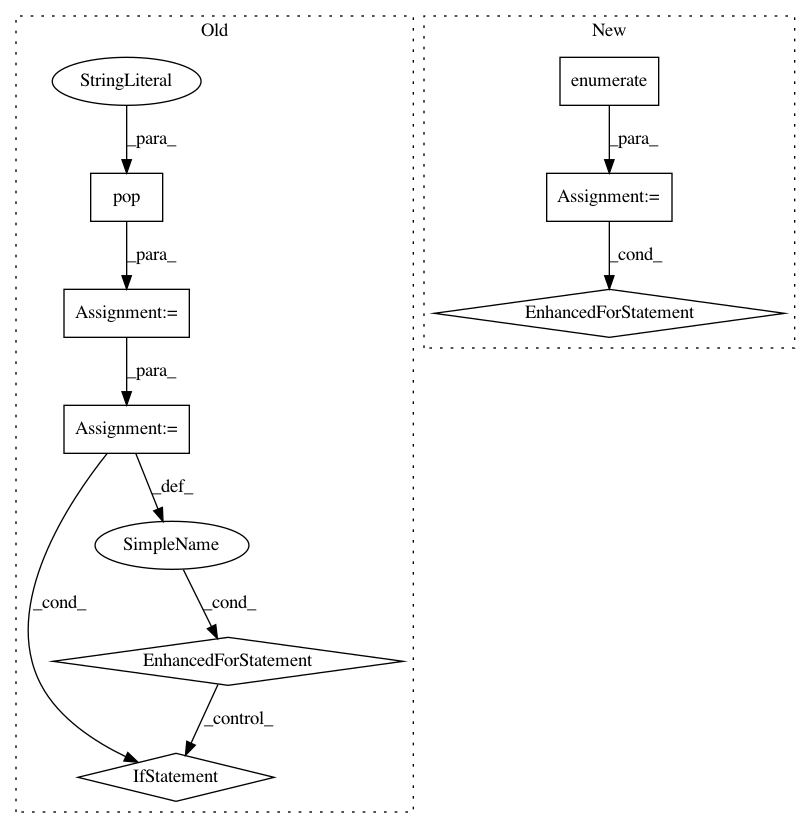

1e05cf469de2a71529d5f6ce922a37e0a386c987,batchflow/models/tf/encoder_decoder.py,EncoderDecoder,body,#Any#Any#Any#,137
Before Change
encoder = kwargs.pop("encoder")
embeddings = kwargs.get("embeddings")
embeddings_common = embeddings.pop("common")
embeddings_order = embeddings.pop("order") or [name for name in kwargs
if "embedding" in name]
decoder = kwargs.pop("decoder")
with tf.variable_scope(name):
// Encoder: transition down
encoder_args = {**kwargs, **encoder}
encoder_outputs = cls.encoder(inputs, name="encoder", **encoder_args)
x = encoder_outputs[-1]
// Bottleneck: working with compressed representation via multiple steps of processing
for embedding_name in embeddings_order:
embedding_args = kwargs.pop(embedding_name)
if embedding_args:
embedding_args = {**kwargs, **embeddings_common, **embedding_args}
x = cls.embedding(x, name=embedding_name, **embedding_args)
encoder_outputs.append(x)
// Decoder: transition up
decoder_args = {**kwargs, **decoder}
After Change
// Bottleneck: working with compressed representation via multiple steps of processing
embeddings = embeddings if isinstance(embeddings, list) else [embeddings]
for i, embedding in enumerate(embeddings):
embedding_args = {**kwargs, **embedding}
x = cls.embedding(x, name="embedding"+str(i), **embedding_args)
encoder_outputs.append(x)
// Decoder: transition up
decoder_args = {**kwargs, **decoder}
In pattern: SUPERPATTERN
Frequency: 3
Non-data size: 8
Instances
Project Name: analysiscenter/batchflow
Commit Name: 1e05cf469de2a71529d5f6ce922a37e0a386c987
Time: 2019-07-12
Author: Tsimfer.SA@gazprom-neft.ru
File Name: batchflow/models/tf/encoder_decoder.py
Class Name: EncoderDecoder
Method Name: body
Project Name: analysiscenter/batchflow
Commit Name: b1d15d9a4476f110d1a7c59051ed49a869bc5cb6
Time: 2019-08-05
Author: d.mylzenova@analysiscenter.org
File Name: batchflow/models/tf/mobilenet.py
Class Name: MobileNet_v2
Method Name: body
Project Name: analysiscenter/batchflow
Commit Name: ed8577a6e4afec9f68bf69dc5d506b425ad7ff17
Time: 2019-08-07
Author: d.mylzenova@analysiscenter.org
File Name: batchflow/models/tf/mobilenet.py
Class Name: MobileNet
Method Name: body